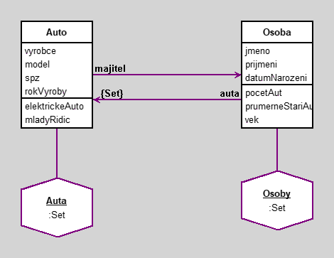

Auta select: [ :a | a majitel vek > 30 ] (Osoby collect: [ :o | o auta ]) (Osoby collect: [ :o | o auta ]) flatten Auta contains: [ :a | a stariAuta > 14 ]
Auta :Set
Osoby :Set
Auta := Set new.
Osoby := Set new.
o1 := Osoba new.
o1 jmeno: 'Pepa'.
o1 prijmeni: 'Novak'.
o1 datumNarozeni: '02-25-1990' asDate. "MM-DD-YYYY ciselne"
o2 := Osoba new.
o2 jmeno: 'Karel'; prijmeni: 'Vomacka'; datumNarozeni: 'JUL-04-2004' asDate. "MMM-DD-YYYY, kde MMM jsou prvni tri pismena mesice anglicky"
o3 := Osoba new.
o3 jmeno: 'Frantisek'; prijmeni: 'Dobrota'; datumNarozeni: '15-NOV-1985' asDate. "DD-MMM-YYYY, kde MMM jsou prvni tri pismena mesice anglicky"
a1 := Auto new.
a1 vyrobce: 'Skoda';
model: 'Octavia';
spz: '1A1 1234';
rokVyroby: 2018.
a2 := Auto new.
a2 vyrobce: 'Skoda';
model: 'Fabia';
spz: '2A2 1234';
rokVyroby: 2017.
a3 := Auto new.
a3 vyrobce: 'Ford';
model: 'Focus';
spz: '4E4 1234';
rokVyroby: 2018.
a4 := Auto new.
a4 vyrobce: 'Tesla';
model: 'Model X';
spz: 'EL1 1234';
rokVyroby: 2022.
Osoby add: o1; add: o2; add: o3.
Auta add: a1; add: a2; add: a3; add: a4.
a1 majitel: o1.
a2 majitel: o2.
a3 majitel: o3.
a4 majitel: o3.
o1 auta add: a1.
o2 auta add: a2.
o3 auta add: a3; add: a4.

|
|
elektrickeAuto
^(spz at: 1) = $E and: [(spz at: 2) = $L]
initialize
"generated by Daskalos"
super initialize.
vyrobce := nil.
model := nil.
spz := nil.
rokVyroby := nil.
majitel := nil.
mladyRidic
^majitel vek < 25
stariAuta
^Date today year - rokVyroby
|
|
initialize
"generated by Daskalos"
super initialize.
jmeno := nil.
prijmeni := nil.
datumNarozeni := nil.
auta := Set new.
pocetAut
^auta size
prumerneStariAuta
^(auta asBag collect: [:a | a stariAuta]) avg asFloat
vek
^((Date today subtractDate: datumNarozeni) / 365.2422) truncated
Generated by Daskalos - Object Modeling Tutor (C) 2006 V. Merunka
March 9, 2024